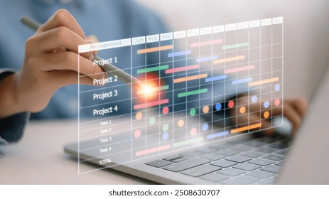

Halo, saya
Aisyah
Frontend Web Developer
Saya membangun website yang modern, bersih, dan mudah digunakan di komputer maupun ponsel. Saya senang mengubah desain menjadi tampilan yang hidup dan nyaman dilihat.
Tentang Saya
Berikut sedikit cerita tentang perjalanan, minat, dan cara saya belajar.
Perkenalan diri. Nama saya Aisyah. Saya seorang Frontend Web Developer yang senang membangun tampilan website yang rapi dan mudah dipakai oleh siapa saja.
Latar belakang pendidikan. Saya belajar di bidang teknologi informasi dan mulai mengenal HTML serta CSS saat masih kuliah. Dari sana, saya terus belajar secara mandiri melalui proyek kecil dan dokumentasi resmi.
Minat di bidang teknologi. Saya tertarik pada desain antarmuka, animasi halus, dan tata letak yang responsif. Saya percaya website yang baik terasa nyaman di layar kecil maupun besar.
Tujuan dan motivasi belajar. Saya ingin menjadi pengembang yang mampu mengubah ide desain menjadi produk yang berfungsi. Motivasi saya adalah melihat orang lain terbantu oleh website yang saya buat.
Keahlian Saya
Beberapa keahlian utama yang saya gunakan untuk membangun website.
-
HTML5
Menyusun struktur halaman yang bermakna dan mudah dipahami mesin pencari.
-
CSS3
Mengatur warna, tata letak, dan animasi agar tampilan terasa rapi.
-
UI Design
Merancang antarmuka yang jelas, konsisten, dan nyaman digunakan.
-
Responsive Design
Memastikan website tampil baik di ponsel, tablet, dan komputer.
-
Git dan GitHub
Mencatat riwayat perubahan kode dan menyimpannya dengan aman di GitHub.
-
Problem Solving
Menguraikan masalah kecil menjadi langkah yang jelas lalu menyelesaikannya.
Hubungi Saya
Punya ide, proyek, atau peluang kolaborasi? Mari berdiskusi.
Email
aisyah@email.com
Kirim email →
GitHub
@aisyah
Kunjungi profil →
LinkedIn
aisyahsalsa
Kunjungi profil →
Instagram
@aisyahsl
Kunjungi profil →
Status: aktif
Tersedia untuk magang dan freelance
Saya terbuka untuk proyek baru. Kirim pesan dan saya akan membalas secepatnya.
Kirim Email